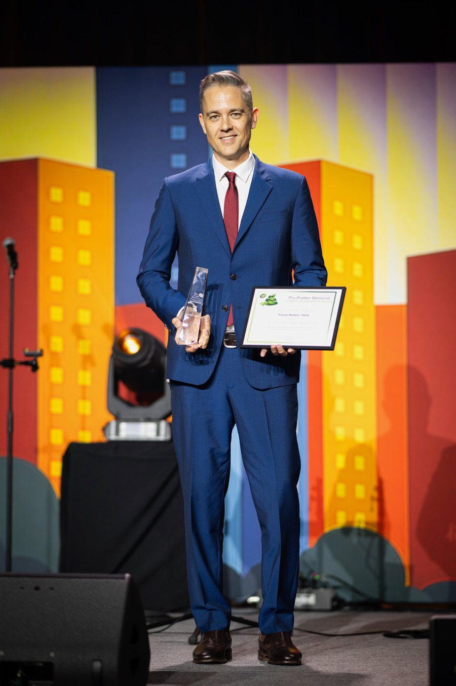
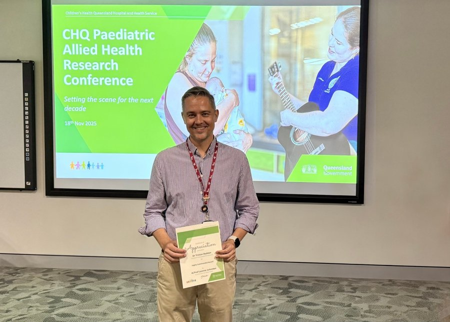
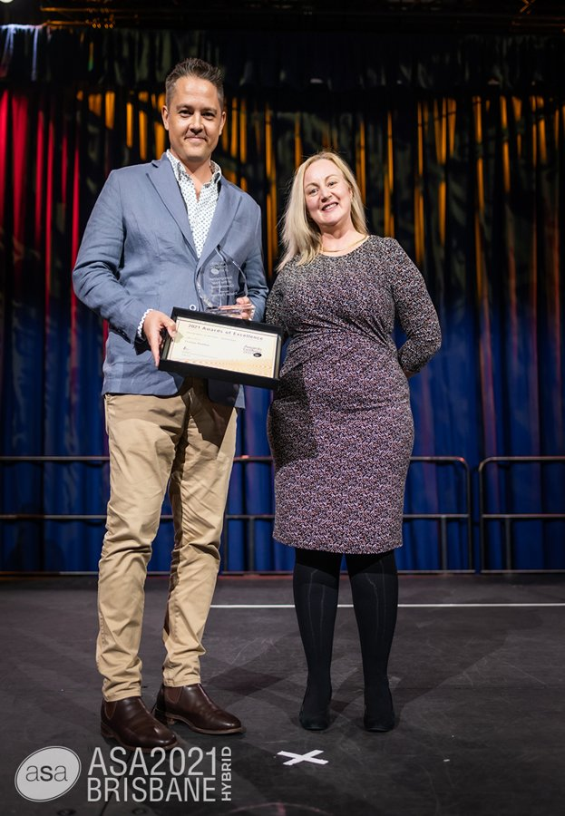
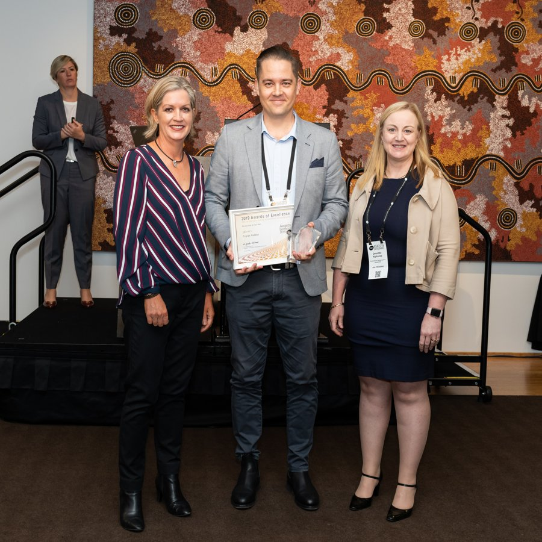
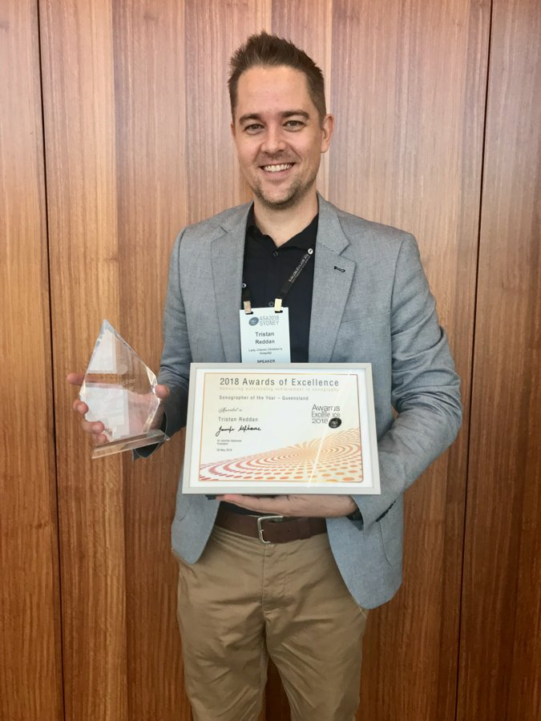

2026
Pru Pratten Memorial Lifetime Achievement Award
Australasian Sonographers Association, 32nd Annual Conference, Gold Coast.

Australasian Sonographers Association, 32nd Annual Conference, Gold Coast.

2025Highly Commended, Allied Health Research Symposium, Children's Health Queensland
Photo by ASA2021Sonographer of the Year, Queensland, Australasian Sonographers Association
Photo by ASA2019Researcher of the Year, Australasian Sonographers Association
2018Sonographer of the Year, Queensland, Australasian Sonographers Association